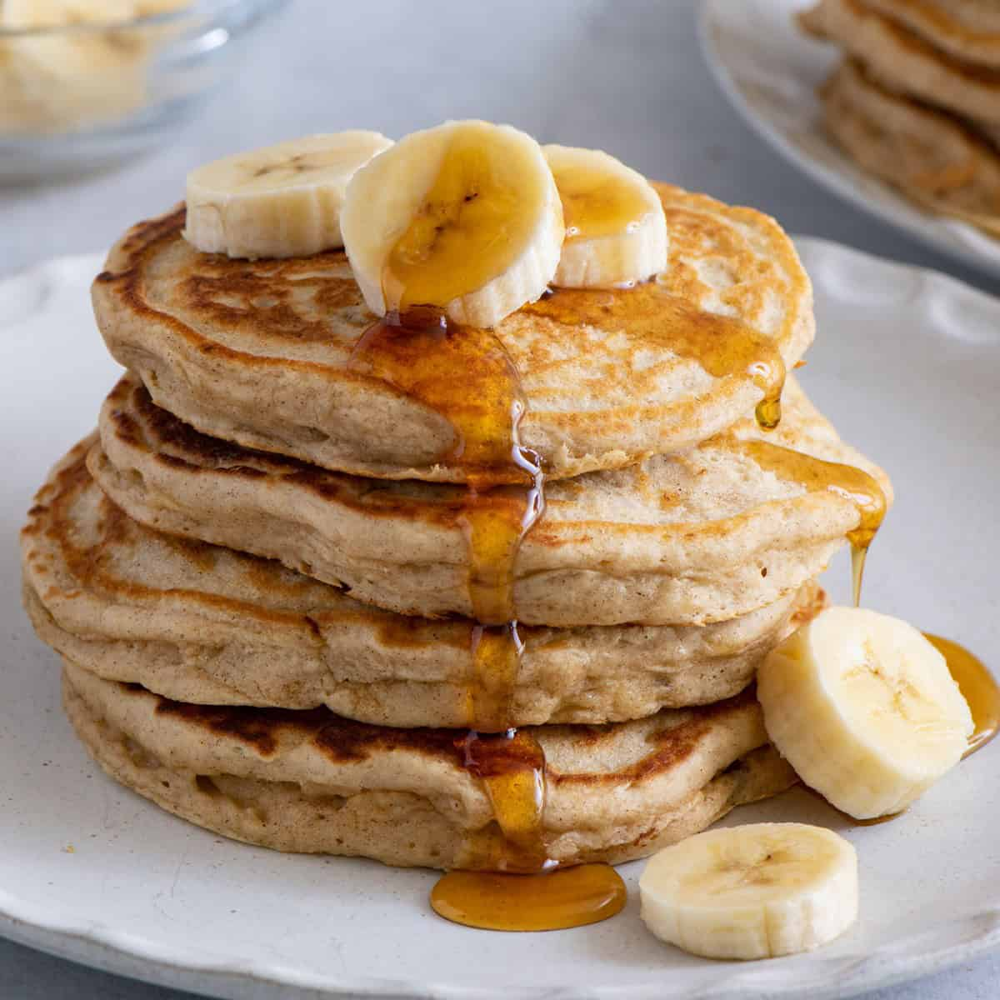

Banana Pancake Recipe
This is a recipe for traditional Cape Verdean banana pancakes. We have this breakfast or desert, and my family likes them extra sweet! This recipe is vegan friendly.
Ingredients
- 2 ripe bananas (preferably already brown)
- 200 grams of flour
- 300 militiers of soy milk (or another plantbased alternative)
- Two to three tbsp of sugar (add more or less depending on personal preference)
- One tsp of baking powder
- A pinch of salt
- Sunflower oil
Instructions
- Start by peeling the bananas and setting them aside in a bowl.
- Add in the sugar and salt, and start mashing the bananas with a fork.
- Once the bananas are mashed together with the sugar and salt, add in the flour and soy milk. Mix these in with a fork as well. Heat up the pan to medium high with some sunflower oil while mixing.
- Once the batter looks smooth, add in the baking powder. Don't overmix it.
- Add the batter to the pan, flip the pancakes when bubbles start forming on top.
- Enjoy these delicious pancakes with some powdered sugar or maple syrup and cinnamon on top.
